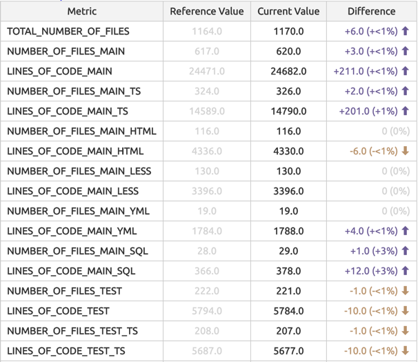
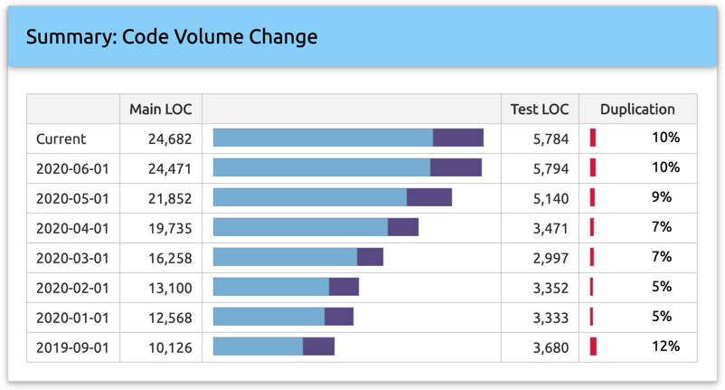

Trend Analysis
Trend analysis shows the difference between values measured at different times, comparing the results of the current analysis with previous reports.

Figure 1: A screenshot from a Sokrates trend report detailing trends per metric.
Trend analysis gives the meaning to measurements through comparison. While it may be difficult to tell if some measured value is good or bad, it may still be possible to say if this value is becoming better or worse. For instance, you always have some level of duplication in code. You may not have the time and resources to refactor the system to remove all duplication. But you usually want to have a trend of reduced duplication. You can at least monitor the duplication level so that your new code does not increase overall code repetition.
For more insights into the value of trend analysis, Sokrates recommends reading the section “Favor tracking trends over absolute numbers” in the article An Appropriate Use of Metrics, (MartinFowler.com):
“Looking at trends provides more interesting information than whether or not a target is met. Working out if a goal is met is easy. The difficult work, and one that management must work with people with the skills to complete is looking at trends to see if they are moving in the desired direction and a fast enough rate. Trends provide leading indicators into the performance that emerges from organizational complexity. It is clearly pointless focusing on the gap in a number when a trend moves further and further away from a desired state.”
Sokrates Snapshots
Sokrates supports trend analysis by saving the snapshots of analysis results and comparing these snapshots with current values. Keeping of snapshots is optional, but if you enable these features, you can choose the saving frequency at three levels: daily, weekly, or monthly.
{
"trendAnalysis": {
"saveHistory": true,
"frequency": "weekly",
"maxReferencePointsForAnalysis": 20,
"historyFolder": "history"
}
}Figure 2: A fragment of Sokrates configuration file, describing parameters of trend analysis and saving of history snapshots.
Each snapshot is an archived file named analysisResults.zip. It contains two JSON files: analysisResults.json, with all measurements, and config.json, with a copy of the Sokrates configuration at the time of the measurement.
Sokrates stores snapshots files in the _sokrates/history/snapshots folder. Each snapshot file has its own subfolder folder with the following naming conventions:
- …/history/snapshots/years-month-day
for daily snapshots (e.g., _sokrates/history/snapshots/2020-01-01) - …/history/snapshots/years-weekInYear
for daily weekly (e.g., _sokrates/history/snapshots/2020-42) - …/history/snapshots/years-month
for monthly snapshots (e.g. _sokrates/history/snapshots/2020-01)

Figure 2: A screenshot from a Sokrates trend report detailing volume and duplication change.
Analyzing Trends Retroactively
If you have just started using Sokrates, you can still get the trend analysis by checking out the code at different moments in the past and running the Sokrates analysis against them to get the snapshots of source code from the past. The following line is the Git command to get your source code as it was on January 1, 2020:
git checkout `git rev-list -n 1 --first-parent --before="2020-01-01 00:00" master`Figure 3: Git commands to get a code on a specified date.
The following code fragment illustrates a more complex example, where you can get the analysis snapshot of any git repository at any date:
#!/bin/bash
# prepare a temporary folder for Sokrates analysis
rm -rf temp
mkdir temp
cp -r sokrates-config/$1/* temp
cd temp
# clone the repository
git clone $2 temp-git-download
cd temp-git-download
# go back in time (the $3 parameter needs to be provided)
git checkout `git rev-list -n 1 --first-parent --before="$3 00:00" master`
cd ..
mv temp-git-download/* .
rm -rf temp-git-download
cd ..
# run Sokrates analysis
java -jar -Xmx10g sokrates.jar generateReports -reportData -confFile temp/_sokrates/config.json -outputFolder temp/_sokrates/reports -reportAll
# make history folders with appropriate date in the name
mkdir history/$1
mkdir history/$1/$3
# copy analysisResults.json and config.json
cp temp/_sokrates/reports/data/analysisResults.json history/$1/$3
cp temp/_sokrates/reports/data/config.json history/$1/$3
rm -rf temp
# zip snapshot files
cd history/$1/$3
zip analysisResults.zip *.json
rm *.jsonFigure 3: A bash script to get the analysis snapshot of a git repository at a specified date.
You can then call this batch file as illustrated in the following example of JUnit4 repository:
#!/bin/bash
rm -rf history
mkdir history
mkdir history/java
bash run-analysis-history.sh 'java/junit4' 'https://github.com/junit-team/junit4' '2020-01-01'
bash run-analysis-history.sh 'java/junit4' 'https://github.com/junit-team/junit4' '2019-01-01'
bash run-analysis-history.sh 'java/junit4' 'https://github.com/junit-team/junit4' '2018-01-01'
bash run-analysis-history.sh 'java/junit4' 'https://github.com/junit-team/junit4' '2017-01-01'
bash run-analysis-history.sh 'java/junit4' 'https://github.com/junit-team/junit4' '2016-01-01'
bash run-analysis-history.sh 'java/junit4' 'https://github.com/junit-team/junit4' '2015-01-01'Figure 5: A bash script describing the full process of checking our source code on different dates, by calling the script defined in Figure 4.